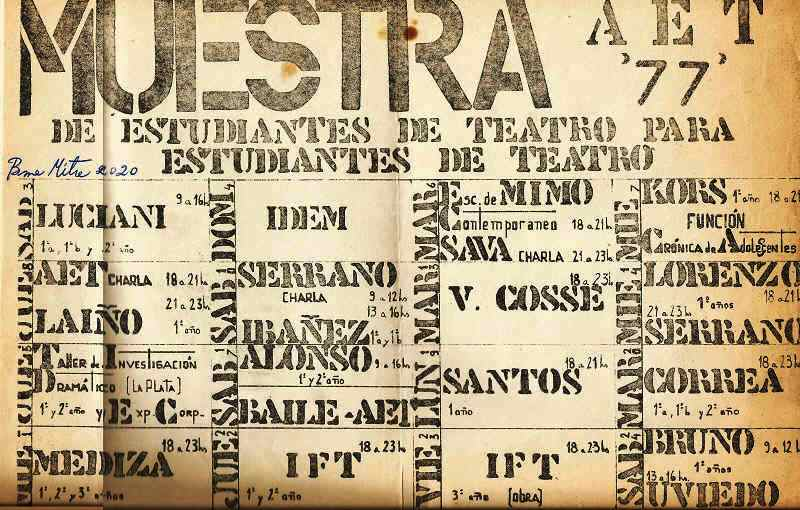

|
|
|
|
 En el marco de una muestra de la AET (Asociación de Estudiantes de Teatro) en la Sala Moliere, Uviedo y su TiT presentaron un hecho teatral basado en textos de Artaud (en el afiche mostrado arriba se ve programado para el sábado 24, en la casilla de abajo a la derecha; era septiembre del '77). La investigación se basó en:
El lugar se llenó
(alrededor de 200 personas). Unos
minutos antes de comenzar, Juan increpó a los actores: "lo que hacen es una
porquería", "no es teatro", "no voy a mostrar este desastre",
etc.; frases que produjeron un desconcierto total en el grupo. En medio de ese caos Juan
gritó
"¡Bloque 3!"; los actores no entendían nada, Juan los apuró y salieron a hacer
el bloque 3; de ahí en más Juan (caminando amenazante por el espacio con un
cinturón en la mano) fue cantando los números uniendo los bloques como él quería y no como estaban
ensayados. Terminada
la función se produjo un debate fuertísimo dividiendo a los espectadores en
dos bandos, los que decían que eso no era teatro y los que decían que por fin
emergía teatro en serio. El debate fue duro y nadie se quería ir, los ruegos
del dueño de la sala no eran escuchados. Solo cuando se acercó un patrullero
para ver qué pasaba lograron desalojar la sala. La discusión era teatral, pero
teñida por las diferentes corrientes políticas que militaban en ese momento en
los grupos de teatro.
|